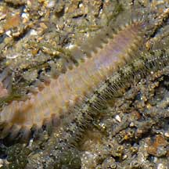
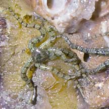
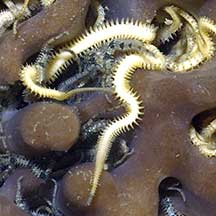
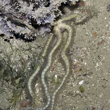

|
|
| Bristleworm
or star? how to tell them apart updated Apr 2020 Bristleworms are worms that are very bristley. Brittle stars have bristley arms, usually five arms sometimes more or less. The arms are connected to a central disk that is usually well hidden. With only the arms sticking out, brittle star arms can be confused for bristleworms. Feather stars also have bristely arms. While brittle stars generally have five arms, feather stars can have 10 or more arms. Feather stars are not as commonly seen as brittle stars. |
 Broader pink thing is a bristleworm, narrower banded thing is an arm of a brittlestar. |
 Tiny brittle stars may be found under stones. They are sometimes also mistaken for bristleworms. |
 Tiny brittle stars may live in a sponge. Only their arms stick out, so they are often mistaken for bristleworms. |
| More comparisons |
|
 The long spiny arms are often all you will see of large brittle stars while their central disk remains hidden. |
||